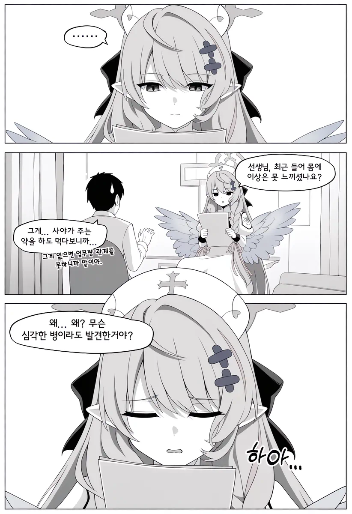
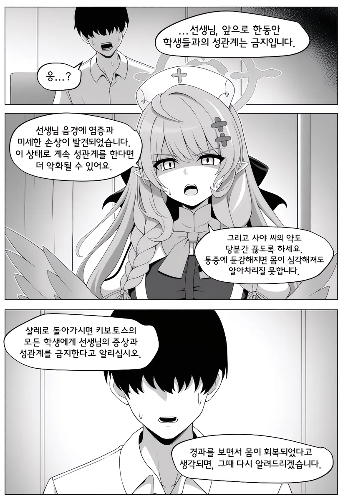
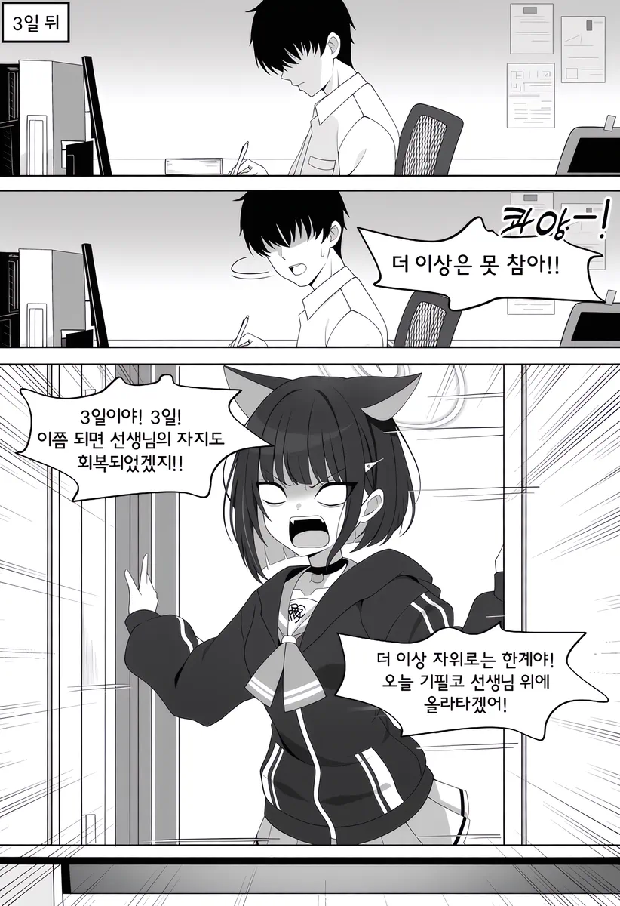
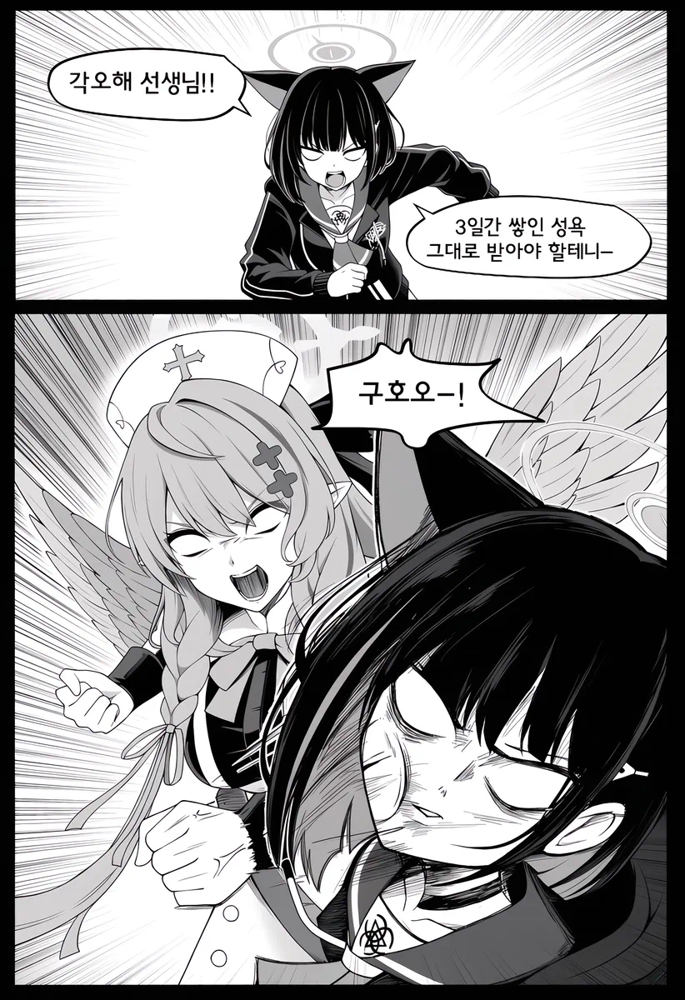
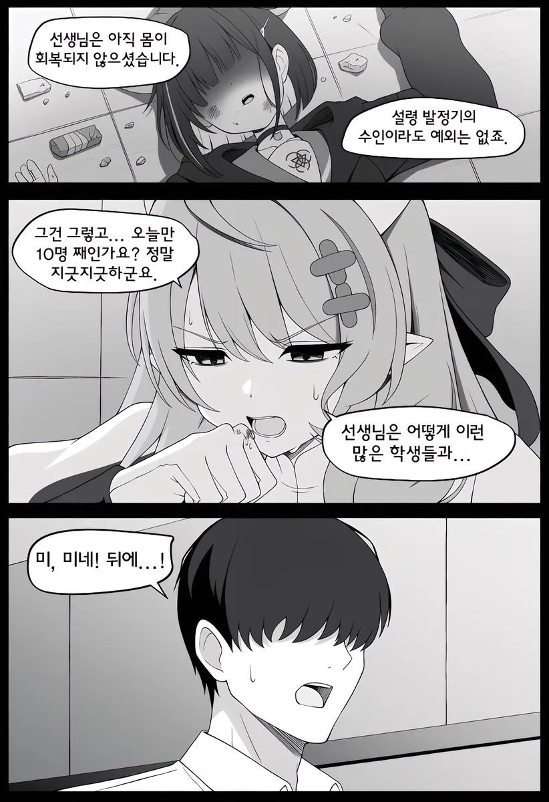
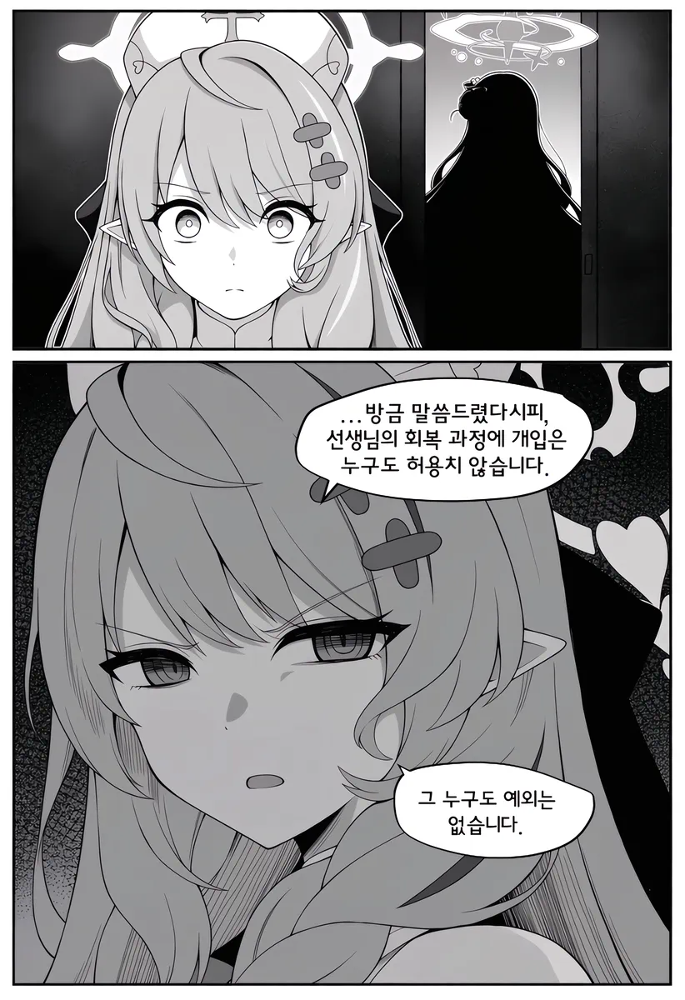
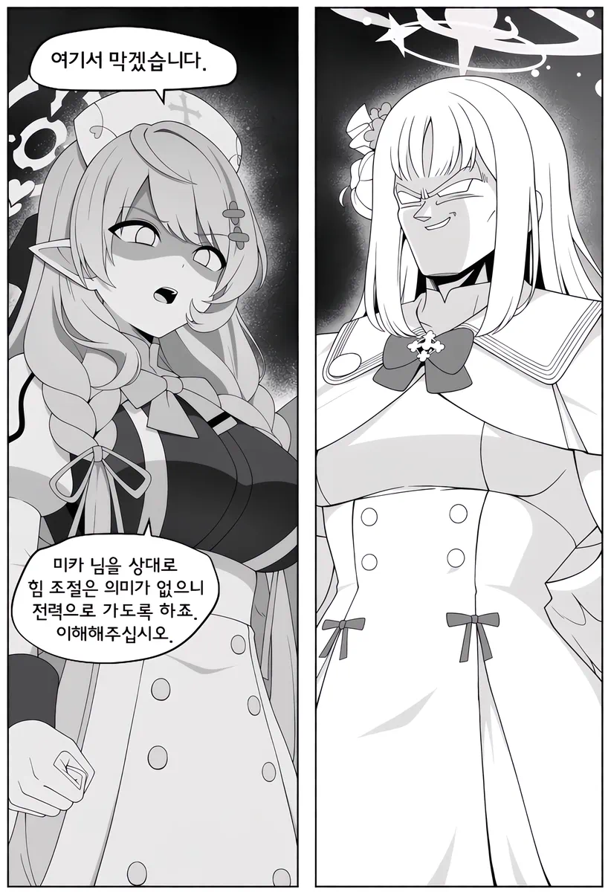
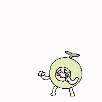

       이건 좀 빡세네..
댓글
수집 당시 댓글 17개
포도음료 · 12 시간 전
· 이히힠 · 6 시간 전
딱딱한골렘 · 9 시간 전
이 샛기 학생들이랑 셋스 함??
· 에어컨쟁이 · 2 시간 전
젝스 백번함
· Illumina · 1 시간 전
각 학생들마다 최소 한 번씩은 함
ahalfsodaus · 6 시간 전
이런 내용이었어?
스릭슨 · 2 시간 전
CrazyRaccoon · 2 시간 전

창원시진해구이동거주중 · 2 시간 전
역시 선생이랑할려면 30대는 때려야하네
가베라 · 2 시간 전
미로리ㄷ
cup · 2 시간 전
구화지문설참신도 · 2 시간 전
음경 염증과 손상은 뭔지 감도 안온다 ㅋㅋㅋㅋ 실제로 신혼에 전립선염은 다발하니까
렙에이거적을려고들어왔다 · 2 시간 전
저 미카는 이길자신이 없다
마더핸드파이 · 2 시간 전
번육개장먹는사람 · 2 시간 전
sleeder · 1 시간 전
이불팔아요 · 1 시간 전